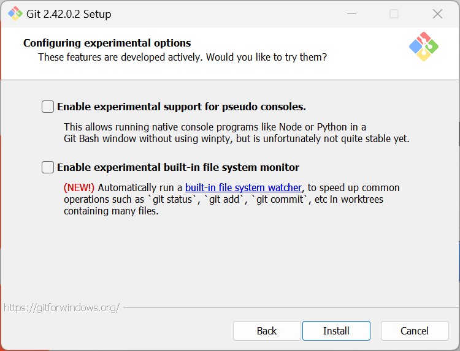

git --version3 Installation
Summary
All beginnings are difficult: This chapter is about downloading and installing Git.
3.1 Downloading Git
3.1.1 macOS
3.1.1.1 Option 1: Terminal
Where is the Terminal?
The Terminal can be found at /Applications/Utilities/Terminal.app or by searching the Spotlight for “Terminal”.
If you are unsure where to find the terminal, we recommend to read the “Command Line” chapter beforehand.
MacOS usually comes with a pre-installed version of Git that is accessible through the Xcode Command Line Tools. Open the Terminal and type:
If Git is installed, you should receive an output similar to:
git version 2.39.2 (Apple Git-143)If Git is not installed you will get a prompt asking you if you wish to install it along with Xcode command line tools. You also may be asked for your administrator password.
Error message:
xcrun: error
Problem
Did you receive the following error message when entering a git command into the Terminal?
xcrun: error: invalid active developer path (/Library/Developer/CommandLineTools), missing xcrun at: /Library/Developer/CommandLineTools/usr/bin/xcrunSolution
xcode-select --installThis will open a dialogue box. Select “Install”, and it will download and install the Command Line Tools package and fix the problem.
3.1.1.2 Option 2: Binary installer
Download and run the installer from: https://git-scm.com/download/mac. Hit Continue through the prompts without modifying the installation destination or other settings. You may be asked for your administrator password.
3.1.2 Windows
To use Git on a Windows computer, we recommend the installation of “Git for Windows”, which includes both the Bash shell and Git. You can download this program at gitforwindows.org.
On the homepage, you should see a prominent download link.
Click on it to start downloading the installer. Once the installer is downloaded, double-click it to run the installation. During the installation process, you’ll be presented with various options and settings. We recommend to leave all settings to their standard configuration, unless you have a specific need to e.g. change the installation destination.

Once you have finished selecting your preference, click the install button to begin the installation process.
The installer will copy the necessary files and set up Git and Git Bash on your system. Once the installation is complete, you’ll see a “Finish” button and the option to directly launch a Bash window.

Now a Bash window opens up and you should be able to use the command line and Git!
3.1.3 Linux
Check if you have git installed by opening your terminal and running:
git --versionIf git is not installed, install it using your package manager, e.g., by running the following command in the terminal:
sudo apt-get install git 3.2 Acknowledgements and further reading
We would like to express our gratitude to the following resources, which have been essential in shaping this chapter. We recommend these references for further reading:
| Authors | Title | Website | License | Source |
|---|---|---|---|---|
| Chacon and Straub (2014) | Pro Git | CC BY-NC | ||
| Capes et al. (2023) | swcarpentry/shell-novice: Software Carpentry: the UNIX shell | CC BY 4.0 | ||
| Koziar et al. (2023) | swcarpentry/git-novice: Software Carpentry: Version Control with Git 2023-05 | CC BY 4.0 | ||
| Bryan (2023) | Happy Git and GitHub for the useR | CC BY-NC 4.0 |